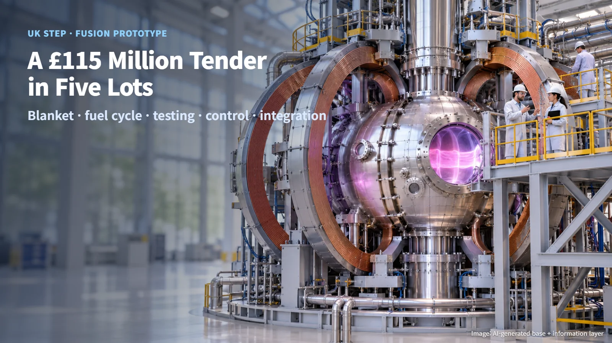
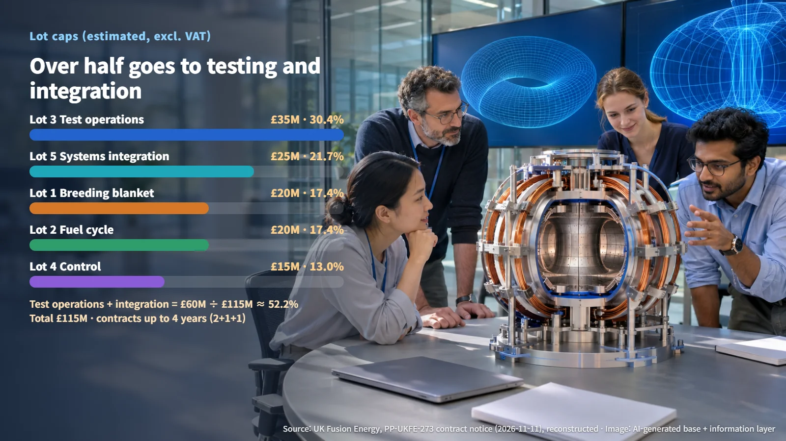
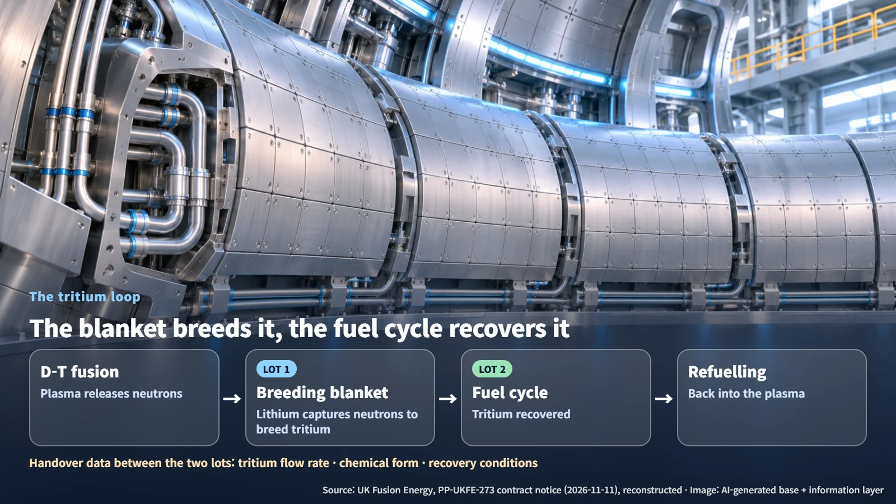

United Kingdom · STEP · Fusion
Inside the UK's £115 Million STEP Fusion Engineering Tender: Five Lots, One Power Plant
UK Fusion Energy is tendering five engineering lots worth up to £115 million for the STEP prototype fusion plant. Test operations and systems integration account for more than half of the caps.
Mention a fusion power plant and most people picture a single giant doughnut-shaped machine. In practice, a plant needs a fuel system, a control system, a test programme and the integration work that ties all of them together, running side by side. A new tender from the United Kingdom shows how that work is being divided up and handed to outside partners.
On 11 November, UK Fusion Energy (UKFE) published its STEP Engineering System Partners procurement (PP-UKFE-273). STEP, the Spherical Tokamak for Energy Production, is a programme that aims to deliver a prototype fusion power plant by 2040. It is based on a spherical tokamak: a tokamak whose central hole has been shrunk so far that the whole device looks closer to a ball than a doughnut.

Five Lots and Their Caps: Where the Money Goes
The notice sets a total estimated cap of £115 million, excluding VAT. Each lot is a framework agreement with a single supplier, running for an initial two years with two optional one-year extensions, for a maximum of four years.
| Lot | Main scope | Cap | |---|---|---| | Lot 1 Breeding Blanket | Detailed design, engineering data, supply chain | £20 million | | Lot 2 Fuel Cycle | Fuel supply and subsystem design and delivery | £20 million | | Lot 3 Test Operations | Test facility operation, design and safety evidence | £35 million | | Lot 4 Control | Plant control system design and integration | £15 million | | Lot 5 Systems Engineering and Whole-Plant Integration | Supporting the Design Authority function | £25 million |
(Source: UK Fusion Energy, PP-UKFE-273 contract notice, reconstructed)
These figures are estimated caps that include extension periods and expenses. A quick check confirms the total: £20 million + £20 million + £35 million + £15 million + £25 million = £115 million, matching the notice. Each area's share works out as follows:
- Test operations: £35 million ÷ £115 million ≈ 30.4% (the largest single lot)
- Blanket + fuel cycle: £40 million ÷ £115 million ≈ 34.8%
- Systems integration: £25 million ÷ £115 million ≈ 21.7%
- Control: £15 million ÷ £115 million ≈ 13.0%
Test operations and systems integration together come to £60 million ÷ £115 million, or about 52.2%. More than half of the budget goes to proving things through testing and pulling the systems into one plant, ahead of the design of individual components. At the prototype stage, the numbers show the weight placed on building evidence that the parts work together. In principle, one supplier can win up to three lots. Adding the three largest caps gives £35 million + £25 million + £20 million = £80 million, or about 69.6% — a theoretical figure obtained by summing caps.

Breeding Blanket and Fuel Cycle: Making and Recovering Tritium
STEP plans to use deuterium–tritium fusion, a reaction in which two light nuclei combine and release energy. Tritium, one of the two fuels, is a radioactive isotope of hydrogen. The device that produces it is the lithium breeding blanket, which captures neutrons from the reaction and uses them to breed tritium.
Tritium bred in the blanket (Lot 1) is recovered by the fuel cycle system (Lot 2) and fed back into the plasma. Because the two systems form a single loop, the blanket side has to hand over tritium flow rates, chemical forms and recovery conditions to the fuel cycle side, and any design change on one side has to be communicated to the other.

Tritium can be absorbed into plant materials and cause contamination, and fusion neutrons can activate structural materials, making them radioactive. That is why maintenance and waste management requirements are handled together with fuel and blanket design from the outset. Lot 2 is structured so that the supplier first supports the design and delivery of the fuel cycle subsystems and later takes the lead.
Evaluation Weights and the 2027 Timeline
The procurement follows the Competitive Flexible Procedure under the UK Procurement Act 2023. Detailed requirement documents (the PSQ and ITT) are available after signing a non-disclosure agreement (NDA), and current UKFE contractors sign an Ethical Walls Agreement.
Bids will be weighted 50% technical, 30% commercial, 10% social value and 10% economic value. With technical capability making up half the score, the ability to carry out design and testing work is the central criterion. The contracting authority also reserves the right to award some or none of the lots.
Clarification questions close at 17:00 on 8 January 2027, bids are due at 17:00 on 29 January 2027, and the award decision is scheduled for 6 April 2027. The procurement is currently at the notice stage; the winning suppliers and actual contract values will be set through this selection process. In England, environmental regulation of fusion facilities sits with the Environment Agency and the Health and Safety Executive (HSE), and developers can use early engagement, a voluntary pre-application information exchange with the regulators.
Before it is a single machine, a fusion power plant is a system of interlocking systems. This tender shows how the work of building that system is being split up and stitched back together. When the April award results arrive, we will see who takes on each lot and carries STEP into its next design phase.